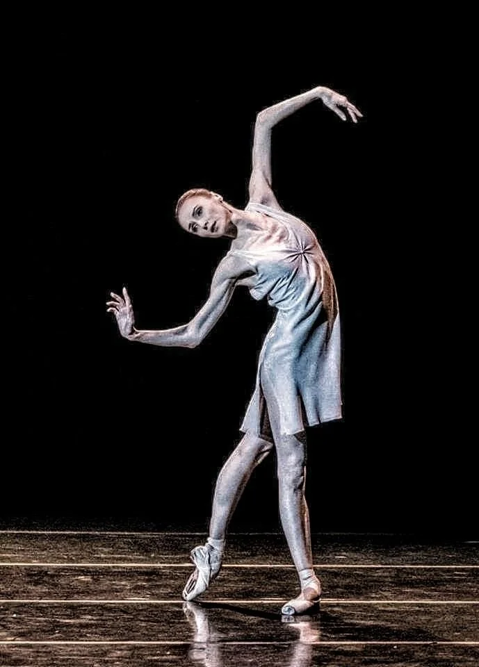
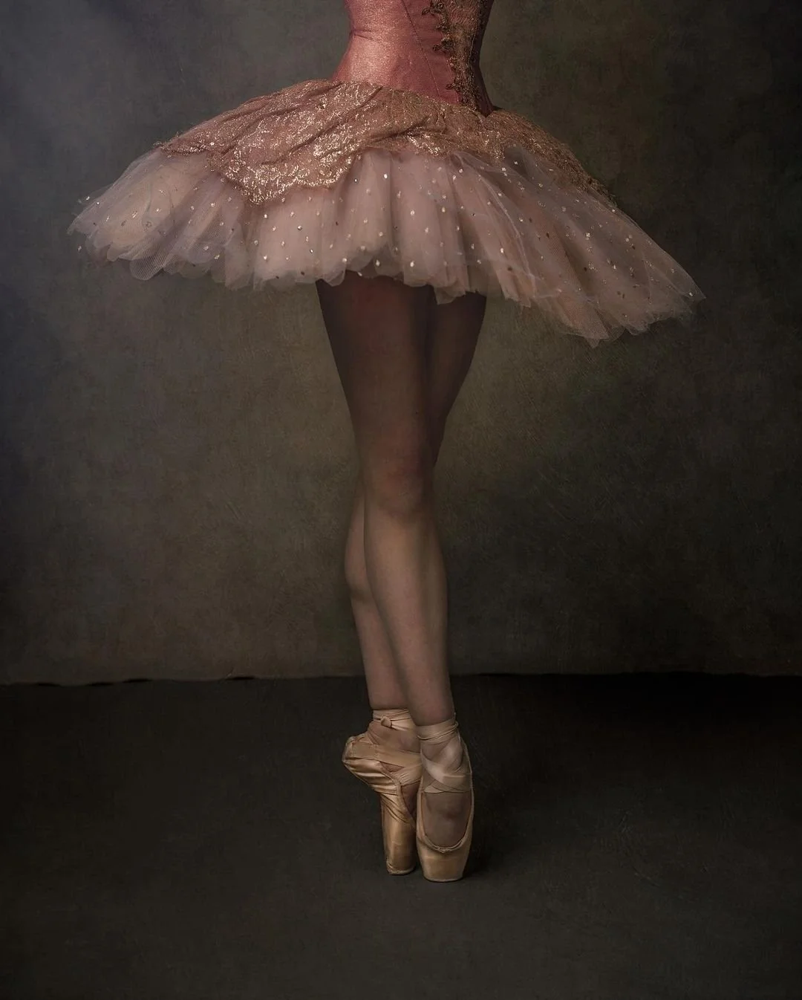
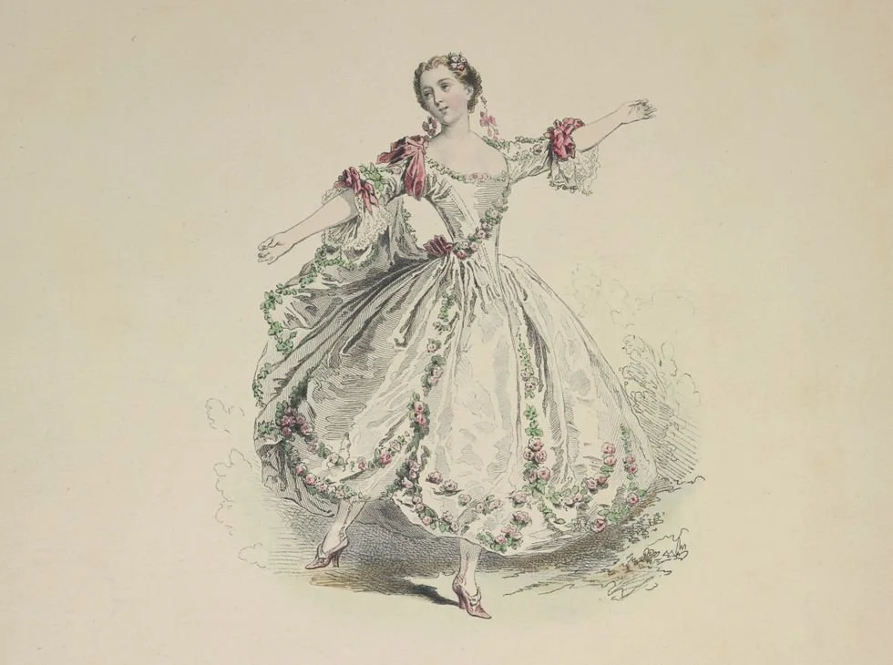
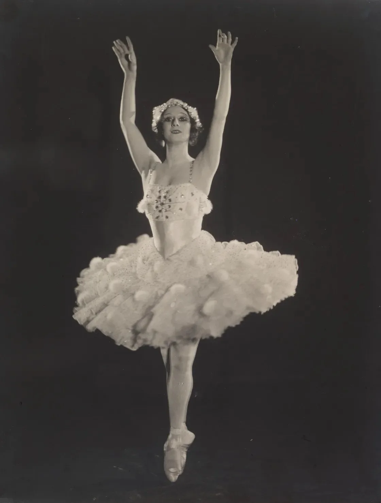
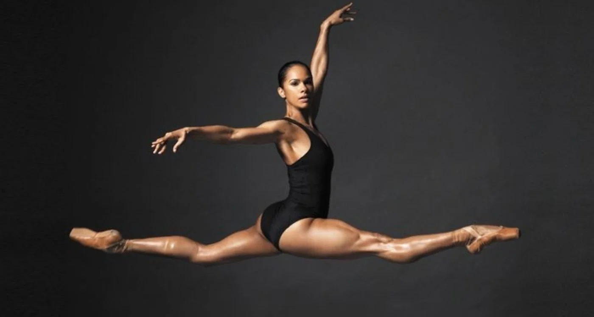

She is a dancer. Long before she learns how to speak about fashion, she has already learned what it means for the eloquence of dance to ripen in her body. In the deepening creases of her toes, in the trained lift of her spine, in the intimate way music begins to live in the nerves, she has let every fall and flight teach her that grace is attained only through rehearsal.

The ballerina effect comes to life when she ribbons her pointe shoes around her delicate yet bruised feet, when tulle falls from her hips like a waterfall suspended in développé, when the bodice lifts her torso into the fierce suspension of a saut de chat, and when satin and seam conspire to make her lithe musculature appear like floating feathers. Here, fashion is not incidental, but rather one of the forces that helps the ballerina sustain in a tradition that has long worshipped the appearance of biomechanical complexity disguised entirely as an aesthetic of effortless beauty. For the purposes of this article, I focus on the feminized figure of the ballerina. Though I wish to acknowledge that this lens does not even begin to account for the full complexity of ballet’s histories of masculinity, virtuosity, and gender variance.
To this effect, what interests me is that the ballerina became one of its most enduring visual fantasies, with balletcore emerging as only the latest expression of fashion’s recurring penchant for that alluring, disciplined, and eminently marketable image. This essay follows that fantasy from the codified world of European court ballet into its modern afterlife of balletcore, athletic branding, and the contemporary ballerina silhouettes.
Political Ballet: A Brief History
Pierre Beauchamp: The Master Who Codified Ballet Technique
Classical ballet is not a neutral aesthetic that innocently came to be treated as the ideal; rather, it is a historically specific and carefully cultivated regime of grace and beauty. It emerged from elite European court culture, where embodied practices like dance were used to stage power through a public display of braggadocio and refinement. In that world, to dance well was to demonstrate breeding, discipline, and proximity to power. This is why ballet’s earliest vocabulary was shaped not in some abstract artistic vacuum, but within the ceremonial life of the court. This impulse became institutionalized in 1661, when Louis XIV founded the Académie Royale de Danse and appointed Pierre Beauchamp, who is widely credited with codifying the basic positions of ballet.
In the seventeenth century, dancers performed in heeled shoes, masks, and heavy garments that closely mirrored aristocratic dress. Therefore, the body was governed less by an abstract ideal than by the court’s own material regime. What changes over time is not only the choreography, but the very politics of spectatorship and attention. So as ballet moved away from court pageantry and toward theatrical virtuosity, the costumes changed with it. Dancers shed encumbering costumes, and the choreography of ballet moved away from sheer opulence toward movement, gesture, and mime. The body had to become increasingly visible to train and assess for technical prowess, so costumes ceased to merely adorn the body and began to clarify its lines and shapes. That logic of embodied surveillance would become one of ballet’s most enduring inheritances.

The Uniform of Spectatorship: Leotards, Tutus, Tights
The modern ballet uniform is not just a matter of style or tradition, but a pedagogical instrument through which ballet makes the body available for instruction, correction, and assessment. Its fitted construction exposes the lines of the torso, hips, legs, and feet so that turnout, alignment, placement, and extension can be evaluated with precision. It renders the body exposed not only to teachers and examiners, but to mirrors and peers, while also training the dancer to internalize those same standards through constant self-observation. In this sense, the leotard, the tight, and the tutu do not represent a break from ballet’s past so much as a refinement of its deepest impulse, which has always been to render the body visible enough to discipline.
The Royal Academy of Dance makes this logic explicit in its examination specifications, stating that uniform should “flatter and enhance” the candidate’s line and that “the silhouette of the candidate should be clearly visible.” In other words, the uniform is woven into ballet’s epistemology, which also enforces exclusionary standards of beauty by making certain contours, silhouettes, and body types appear more acceptable, refined, and therefore more desirable than others.
Historically, the staged expression of this logic is the tutu. The prototype of the Romantic tutu emerged in the 1830s and is closely associated with Marie Taglioni; by the 1880s, costume evolution had shortened the skirt to reveal the full leg. This shift was not simply about changing standards of modesty, but about redirecting attention to the body’s motor proficiency. The leg becomes the privileged site of technical display, the place where virtuosity must be made visible. Thus, it was built to reveal the very anatomical zones that are trained to perfection and utmost refinement: rotation, elevation, turnout, extension, and the uninterrupted line from hip to toe.
Ballet’s standards are often justified in the name of utility, yet that utility has never been free of exclusion. Because the uniform makes the body hypervisible, it also trains the eye to recognize some bodies as naturally correct and others as inadequate, excessive, improper, or in need of adjustment. This becomes even clearer when one considers how profoundly the uniform was not designed for everyone. The same logic explains why “ballet pink” is not a color preference, but an aesthetic choice: it elongates the leg by allowing the shoe and tight to disappear into an assumed neutral flesh tone. What the industry has increasingly had to name as implicit bias is the fact that this “neutral” was never universal at all, but historically coded around light skin. The industry has increasingly had to acknowledge this as implicit bias, because that so-called neutrality was historically coded around light skin. Pointe shoes and tights were long produced in pale pink only for dancers whose bodies already fit that norm. For many Black and Brown dancers, by contrast, that satin was never neutral at all, but an additional labor. In response, many dancers of colour have described the practice of “pancaking,” the painstaking labour of applying makeup to pink shoes so they better match their own skin tone and preserve the seamless line demanded onstage. This is a powerful example of how ballet asks certain bodies to work harder to maintain its illusions of purity.

A visible turning point arrived with the collaboration between Freed of London and Ballet Black, which in 2018 introduced Ballet Bronze and Ballet Brown for Black, Asian, and mixed race dancers, not as a cosmetic novelty, but as a correction to a tradition that had long mistaken whiteness for universality. Ballerinas of color have now exposed its original exclusions and forced ballet to confront how deeply marginalization had been stitched into even its most basic garments. Misty Copeland’s ascent, culminating in her 2015 promotion as the first Black woman principal dancer in American Ballet Theatre’s history, belongs to that same struggle, because representation in ballet has never been only about casting, but also about who gets to inhabit the institution’s image of elegance without first having to alter the costume, the palette, or the body to “qualify” for it.
Pointe Shoes: Weightlessness, Craft, and Consequence
Pointe is the quintessential case where fashion becomes biomechanics: the shoe is engineered to make the body appear to defy gravity while actually intensifying the demands placed on the foot and ankle. There is something cruelly paradoxical about a pointe shoe, for it begins as a hardened shell, then gradually yields only through the labor of being worn.
Institutional accounts commonly locate the popularisation of pointe work in La Sylphide, where Taglioni’s toe work helped build the Romantic ideal of the ballerina as ethereal and otherworldly. Early pointe shoes were closer to reinforced slippers, but over time, the form evolved into a far more intricate internal architecture of support. Contemporary technical descriptions note that the toe box is built from layers of paper, burlap, and cardboard stiffened with paste, then wrapped in satin, while the shank is designed to sustain the arch.

When we account for the fact that traditional pointe shoes break down with startling speed, the shoe begins to read not only as an artistic icon but as economic infrastructure. Some companies require thousands of pairs each year; reporting on New York City Ballet, for instance, has noted annual pointe-shoe costs approaching a million dollars. Thus, the fantasy of weightlessness rests on an object that is not only delicate and handmade but expensive to sustain.
The resistance to pointe shoe innovation further reveals ballet’s cultural relationship to suffering and tradition. Recent coverage frames the debate as one between handmade heritage shoes and newer, technology-driven designs that promise greater comfort and durability. Yet the conflict is not practical for beneath it lies a deeper attachment to pain itself, as though discomfort were inseparable from the authenticity, discipline, and aesthetic sanctity of the form.
Ballet Becoming Athletic: Prima Ballerinas in Sportswear Marketing
The ballerina effect becomes newly apparent when sports brands frame ballerinas as athletes rather than ethereal exceptions, because ballet has always required elite physical capacity and carries a high injury burden. Yet, it has historically been culturally positioned closer to art than to sport. More recent reviews focus specifically on pointe shoe effects and foot and ankle biomechanical risk, reinforcing that the pointe shoe is an intensifier of athletic load rather than a decorative accessory. This is why modern sportswear partnerships are not randomly branding, they are recognitions of what ballet already is, and they also reveal how femininity is being re-coded in marketing language. Under Armour formalised this in 2014 when it signed Misty Copeland and made her “central to women’s marketing campaigns”, a partnership explicitly described in the brand’s own press release and widely analysed as a strategic claim that ballerinas belong inside “female athlete” narratives.
Nike has made similar moves by elevating principal dancers with storytelling, including a Nike profile featuring Isabella Boylston describing ballet as life and lifestyle, and a Nike article featuring Michaela DePrince in a sports bra campaign centred on ballet as a form of athletic expertise, which is precisely the cultural shift you are tracking when you describe ballerinas at the top of athletic branding hierarchies. The newest and most overt synthesis is Nike’s collaboration line with SKIMS, where Nike’s own newsroom describes NikeSKIMS as a “head to toe system of dress” and Nike’s product page explicitly markets “ballet inspired layers,” while trade press frames the Spring 2026 collection as inspired by the “modern ballerina,” and campaign coverage emphasizes dance as the visual language through which femininity and performance are being sold together.
Ballet and Fashion: From Couture Costuming to Balletcore Commerce
Ballet has shaped fashion not only through inspiration but through collaboration, with modernist performance culture becoming one of the earliest sites where couture, visual art, and dance mutually produced prestige. The Ballets Russes phenomenon is a major reference point here, and the 1924 ballet Le Train Bleu remains iconic because it brought together Coco Chanel for costumes and Pablo Picasso for stage imagery, a convergence that recent revivals and arts coverage continue to treat as emblematic of fashion’s long courtship with ballet as a cultural symbol.

This pattern disseminates across decades as Yves Saint Laurent designed costumes for ballets choreographed by Roland Petit, with the Musée Yves Saint Laurent Paris documenting costume sketches for Petit’s Notre Dame de Paris, demonstrating that ballet costuming can function as an extension of fashion authorship rather than a separate craft world.
That courtship continues now in the language of balletcore, though the contemporary version is more commercially fluent for high fashion, which re-packages practice wear and performance motifs into sellable femininity. Miu Miu’s satin ballet pumps, which debuted on the Fall 2022 runway and were quickly framed by Vogue as a cult object, helped make balletcore newly visible as a market category rather than a passing styling quirk. What balletcore sells, however, is often not ballet itself, but a distilled fantasy of it: the satin flat without the blister, the pale pink silhouette without the institutional history of the palette, and the cardigan wrap without the sinched waist caused by starvation. In this sense, balletcore is neither wholly good nor wholly bad. It does democratize access to a visual vocabulary once guarded by elitism, and it allows ballet’s codes to circulate beyond the studio; yet it also risks aestheticizing a form whose actual history is bound up with bodily surveillance, racial exclusion, and the demand for conformity to pain. Fashion’s recurring return to ballet is compelling precisely because ballet offers one of its most persuasive fictions, namely that rigor can be made to appear lyrical, and that discipline, once dressed correctly, can pass for softness and elegance.
My Personal Narrative: The Body as the Ballerina’s Archive
Ballet is the first place where you learn that clothes and costumes create an atmosphere. By becoming the architecture for the body, fashion becomes an outer structure for an inner world, giving contour to emotion, character, play, challenge, and all the private conversations between fragility and pain, dominance and surrender. The ballerina effect has an emotional cadence in the sense that it teaches a dancer to romanticize endurance, to make ritual out of repetition, and to find something almost sacred in the pursuit of impossible refinement. After enough years, it began to feel inseparable from the self.
This is why ballet garments read like corporeal technologies that bind girlhood to memory. Leotards, rosin, pale pink satin, stage powder, the faint violence of ribbons pulled taut around the ankle. They gather meaning until they no longer register as accessories, but as extensions of a dancer’s identity by holding the residue of rehearsal, correction, repetition, longing, embarrassment, small triumphs, and private rituals in the wings. Even now, when I think of ballet, I think of texture and the intimate material life of becoming.
That is why pointe shoes feel so emotionally charged to me. Just as Louboutins may come to signify a relic of opulence and worldly femininity, dance booties and Bloch pointes, moulded to the very borders of a ballerina’s feet, become relics of hard work. Softened by sweat and pressure, they bear the imprint of the body that has suffered inside them. A pointe shoe is never generic once it has belonged to a dancer; it begins to feel peculiarly hers, shaped by her arch, her pain threshold, and will. Ballet shows us that what touches the body reshapes it, inevitably suffusing the psyche as well. Fashion crystallizes into identity the way memory slips into fabric, preserving the old choreography of rehearsal and desire long after the music is gone.
References
- Britannica. (n.d.). Pierre Beauchamp. https://www.britannica.com/biography/Pierre-Beauchamp
- Freed of London. (n.d.). Ballet Black. https://www.freedoflondon.com/ballet-black/
- Lewis Foundation. (2024, December). The struggles of ballet. https://thelewisfoundation.org/2024/12/the-struggles-of-ballet/
- Musée Yves Saint Laurent Paris. (n.d.). Opera & Ballets Russes. https://museeyslparis.com/en/biography/collection-opera-ballets-russes-ah
- National Library of Medicine. (2024). Biomechanical and clinical considerations of pointe work in ballet dancers. https://pubmed.ncbi.nlm.nih.gov/38174848/
- Opéra National de Paris. (n.d.). The 17th century. https://www.operadeparis.fr/en/about/history/the-17th-century
- Royal Academy of Dance. (n.d.). Before your exam. https://www.royalacademyofdance.org/dance-exams/before-your-exam/
- Smithsonian Institution, National Museum of American History. (n.d.). Pancaked ballet shoes worn by Misty Copeland in January 2018. https://www.si.edu/object/pancaked-ballet-shoes-worn-misty-copeland-january-2018:nmah_1889847
- Vīksne, A., et al. (2024). Article. Latgale National Economy Research Journal. https://journals.rta.lv/index.php/LATG/article/view/1590